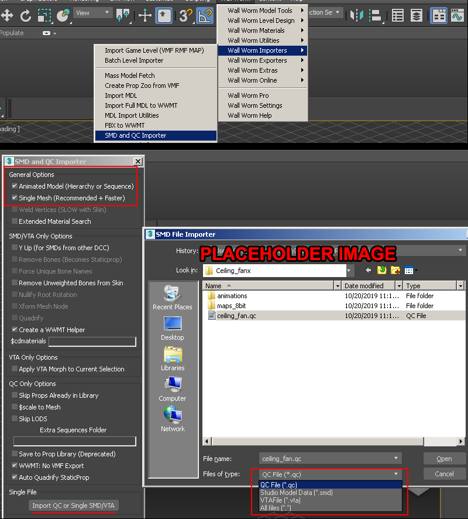
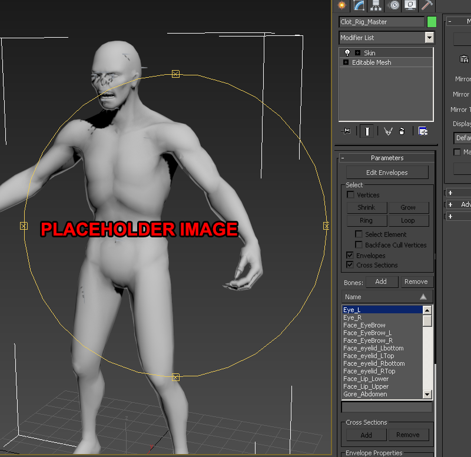
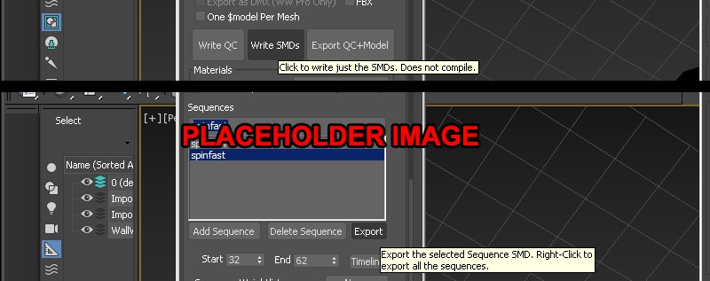

3DSMax

In this tutorial we will need to install and use WallWorm Model Tools.
Preparing The Models
As of writing, there is currently a bug where 2way blends are not imported, As a workaround you need to make a copy of the QC with additional rewritten blend sequences to workaround this and get everything imported. You can use notepad++ to grab a file list from a dir and assign them their own $sequence lines
1) First go to the WallWorm menu and go to "Wall Worm Importers>SMD and QC Importer" , then import your model QC with "animated model" option checked. This will import the whole model with animations.

2)When the import is complete, select all the bones on the model, go into animation tools > bone edit mode > Bone OFF checkbox. Then translate the bones into a different proportion to your desired target model/mesh. Because all sequences are loaded into the timeline this affects all the animations. If you haven't already, skin the imported bones to the new mesh.
2a) an optional thing you can take advantage of since you now have all animations imported is you can make some additional bones with bone controllers and rigging to fake out softer animation skinning. Basically, add/copy a bone in the skeleton, rename it, skin it to a loop, then put a rotation controller with the next bone in the heiarchy and use a 50~30 or whatever percentage.

3)Select the WWMT helper, then remove the original mesh tied to it, then assign your new one. Then go to the WWMT helper object and "Write SMDs" to export the whole lot

The final result: